Rune Grimoire
Anglo-Saxon Futhorc 13
Bind Rune 7
Elder Futhark Runes 25
Germanic Symbol 1
Icelandic Stave 2
Magical Alphabet 26
- Aig Bkr Alphabet
- Alchemical Alphabet
- Alphabet of Arrows
- Alphabet of Daggers
- Angelical Script
- Atbash Cipher
- Celestial Script
- Coffin Texts
- Davidian Alphabet
- Enochian Script
- Greek Alphabet
- Hebrew Alphabet
- Hieroglyphs
- Illuminati Cipher
- Kama Sutra Cipher
- Knights Templar Alphabet
- Malachim Alphabet
- Passing the River
- Pictish Swirl Script
- Pigpen Cipher
- Pyramid Texts
- Rosicrucian Alphabet
- Royal Arch Cipher
- Runic Alphabet
- Witches Alphabet
- Writing of the Magi
Ogham Runes 27
- Ailm
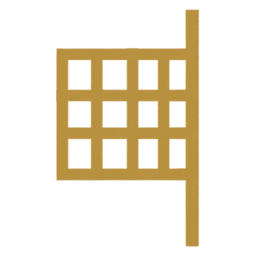
Amhangholl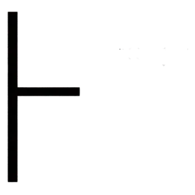
Beth- Blank
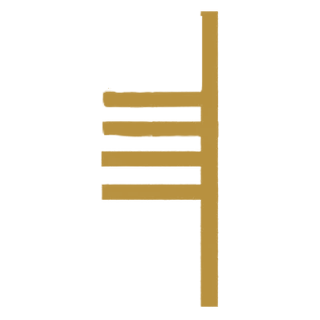
Coll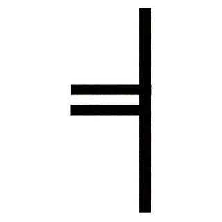
Duir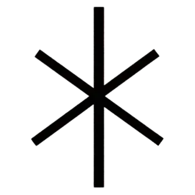
Eabhadh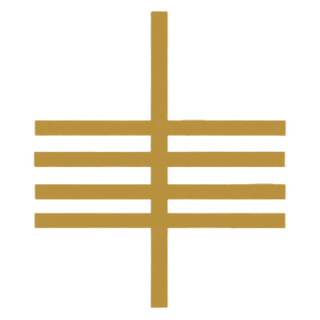
Eadlha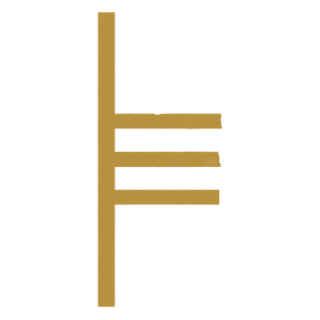
Fearn- Gort
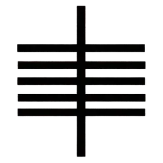
Idho- Ifin
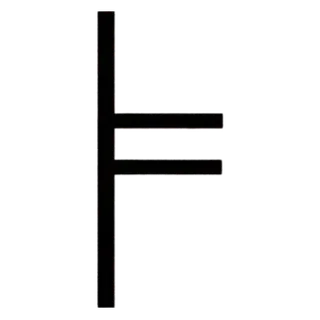
Luis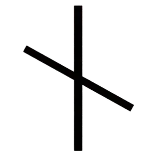
Muin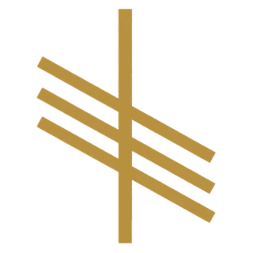
nGeadal- Nion
- Ogham Tree Alphabet
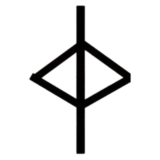
Oir- Onn
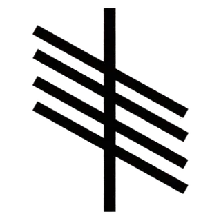
Pethboc- Quert
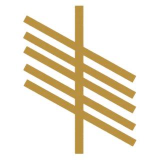
Ruis- Saille
- Tinne
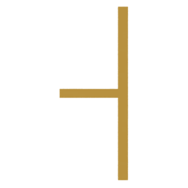
Uath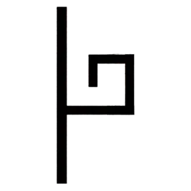
Uillean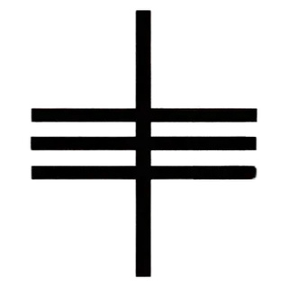
Ur